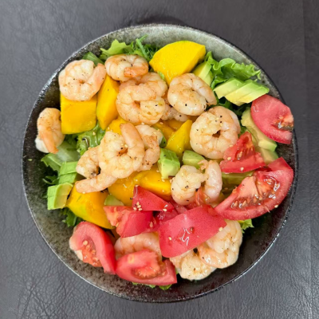
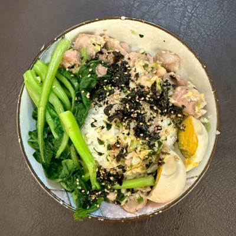

虾仁蔬果沙拉

1. 切好生菜、苦苣、小番茄、芒果、牛油果（淋 柠檬汁 防氧化）
2. 调油醋汁：橄榄油 2 勺、生抽 1 勺、蜂蜜 1 勺、苹果醋 1 勺、黑胡椒、柠檬汁
3. 将蔬菜铺底，水果和虾放在上面，淋油醋汁
和风葱姜鸡肉饭

1. 鸡腿去骨切块
2. 葱姜蒜 切碎，与热油、芝麻、黑胡椒、生抽调汁
3. 鸡腿肉裹 生粉 油煎，加入葱姜汁焖 1 分钟，加 青柠汁
4. 碗底铺 米饭，放鸡肉、溏心蛋、海苔、芝麻碎、香葱
超级碗（Smoothie Bowl）

1. 准备 Granola 麦片、新鲜莓果片（草莓、蓝莓、香蕉）、椰子片、奇亚籽
2. 制作冰沙底：冷冻莓果、香蕉、巴西莓粉、不老莓原浆、希腊酸奶 搅打
3. 倒入碗中，铺上麦片和水果
胡萝卜苹果汁

1. 准备胡萝卜 1 根、小苹果 1 个（或半个大苹果）、半颗 柠檬、橄榄油 2 勺
2. 榨汁机打碎